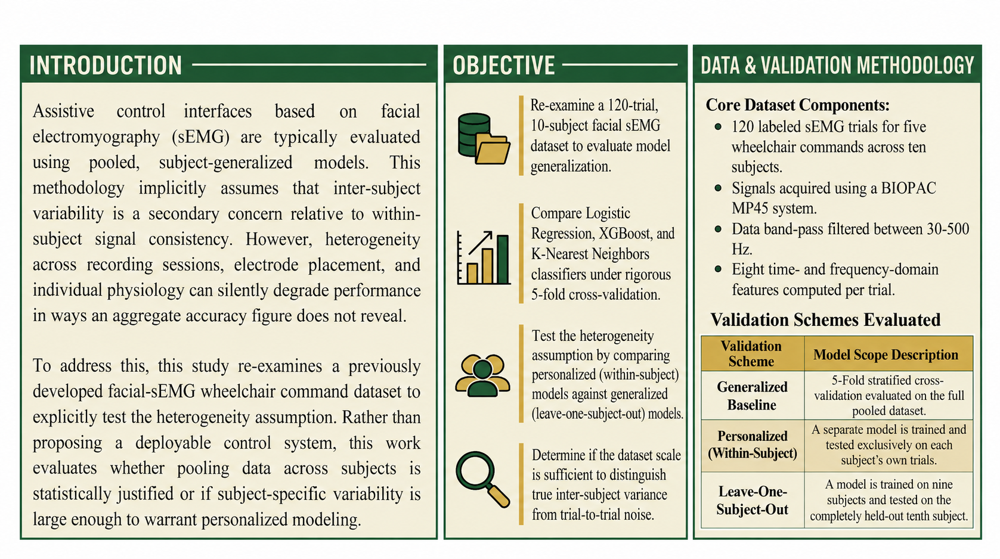
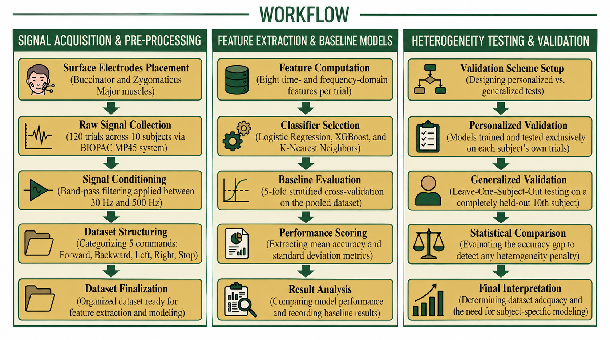
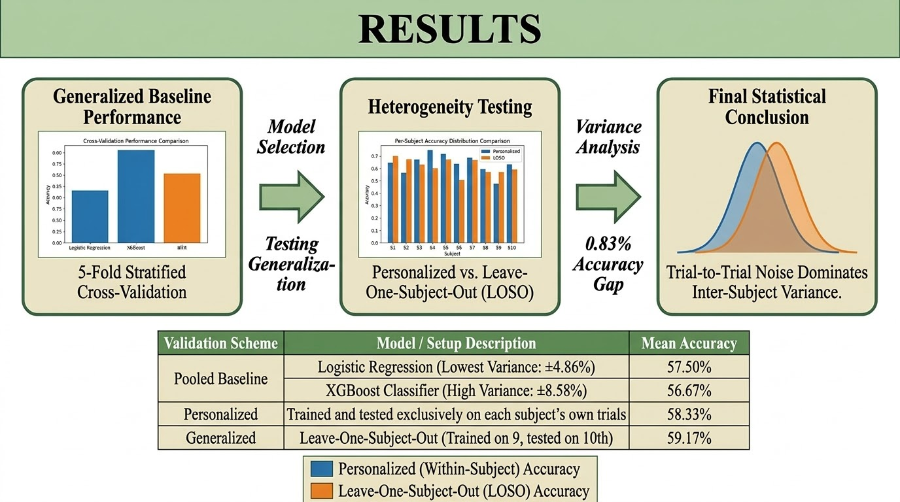

Independent Research Study · 2026
Quantifying Subject-Level Heterogeneity in Facial Electromyography
A Small-Sample Cross-Validation Study for Assistive Control Models
01 / OVERVIEW
The Research Question
This study re-examines a previously developed facial-sEMG wheelchair command dataset to ask a different question: is pooling data across subjects statistically justified, or is subject-specific variability large enough to require personalized modeling?
Assistive control interfaces based on facial surface electromyography (sEMG) are often evaluated using pooled, subject-generalized models. Such approaches implicitly assume that inter-subject variability is secondary to within-subject signal consistency.
This study explicitly tests that assumption by comparing personalized models with generalized leave-one-subject-out validation.
The work is an independent methodological extension of the earlier hardware project. It does not propose another wheelchair control system; instead, it focuses on classification, cross-validation, and subject-level heterogeneity.
Study at a Glance

02 / OBJECTIVES
What This Study Tests
Re-examine the Dataset
Re-examine the 120-trial, 10-subject facial sEMG dataset to evaluate model generalization.
Compare Classifiers
Compare Logistic Regression, XGBoost, and K-Nearest Neighbors under rigorous 5-fold cross-validation.
Test Heterogeneity
Compare personalized within-subject models against generalized leave-one-subject-out models.
Separate Variance Sources
Determine whether the dataset can distinguish true inter-subject variance from trial-to-trial noise.
03 / METHODOLOGY
From sEMG Signals to Statistical Testing
Dataset
The dataset contains 120 labeled sEMG trials collected from ten subjects. The five command classes contain 24 trials each and were acquired using a BIOPAC MP45 system.
Signal Conditioning
The recordings were band-pass filtered between 30–500 Hz. The original acquisition protocol involved facial sEMG recordings over the Buccinator and Zygomaticus Major muscles.
Feature Extraction
Eight time- and frequency-domain features were computed for every trial.
Model Comparison
Three classical machine-learning classifiers were evaluated using stratified 5-fold cross-validation on the pooled subject-mixed dataset.

04 / VALIDATION DESIGN
Personalized vs. Generalized
Personalized
58.33%A separate model was trained and tested exclusively on each subject's own trials, with accuracy averaged across subjects.
Generalized — LOSO
59.17%The model was trained on nine subjects and tested on the completely held-out tenth subject, repeated across all ten subjects.
Key observation: The generalized model did not underperform the personalized model. It marginally exceeded it by 0.83 percentage points, producing a null result with respect to the original heterogeneity hypothesis.
05 / RESULTS
Model Performance
Logistic Regression achieved the strongest and most stable generalized performance under 5-fold cross-validation. XGBoost produced a comparable mean accuracy but substantially higher fold-to-fold variability, while K-Nearest Neighbors was the weakest of the three models.
| Model | Mean Accuracy | Standard Deviation | Observation |
|---|---|---|---|
| Logistic Regression | 57.50% | ± 4.86% | Best mean accuracy and lowest variance |
| XGBoost | 56.67% | ± 8.58% | Comparable mean with higher variance |
| K-Nearest Neighbors | 48.33% | ± 5.65% | Weakest performer |

06 / INTERPRETATION
What the Results Mean
Logistic Regression Was Most Stable
Logistic Regression achieved 57.50% ± 4.86%, giving it both the highest mean accuracy and the lowest fold-to-fold variance among the three classifiers.
XGBoost Showed Greater Variability
XGBoost achieved a comparable mean accuracy of 56.67%, but its standard deviation was higher at ±8.58%, indicating less stable performance in the small dataset.
No Measurable Heterogeneity Penalty
Personalized models achieved 58.33% accuracy, while generalized LOSO models achieved 59.17%. The difference was only 0.83 percentage points.
Dataset Scale Matters
The findings suggest that trial-to-trial noise may dominate systematic inter-subject variance at this sample size. The result should therefore not be interpreted as evidence that facial sEMG has no inter-subject heterogeneity.
07 / CONCLUSION
A Null Result That Is Still Informative
This study set out to test, rather than assume, whether subject-level heterogeneity meaningfully limits pooled facial-sEMG classification models.
Under the constraints of a 120-trial, ten-subject dataset, no measurable heterogeneity penalty was found. Personalized and generalized models produced closely matched performance.
Rather than proving that personalization is unnecessary, the result highlights an important methodological issue: the dataset may not yet be large enough to distinguish true inter-subject variance from trial-level noise.
Future Direction
A substantially larger multi-session dataset, with a broader subject pool and repeated recordings per subject, would provide greater statistical power. The study also motivates variance-aware approaches such as random-effects heterogeneity estimation for future multi-subject biomedical machine-learning work.
Scope of this study: This work makes no claim about deployable classification accuracy for a real assistive device. Its contribution is methodological: evaluating whether pooling is statistically defensible for facial sEMG at this dataset scale.
08 / CITATION
Cite This Work
@article{srinitha2026heterogeneity,
author = {Srinitha Sreekanth},
title = {Quantifying Subject-Level Heterogeneity in Facial Electromyography:
A Small-Sample Cross-Validation Study for Assistive Control Models},
year = {2026},
note = {Independent Research Study}
}